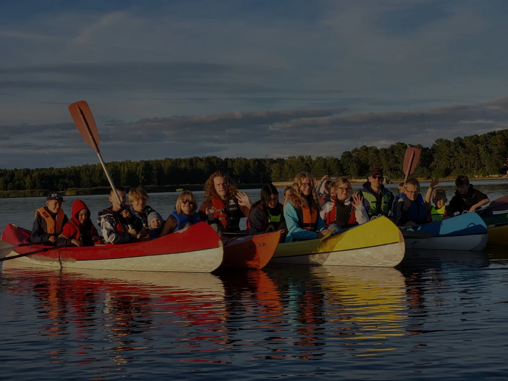
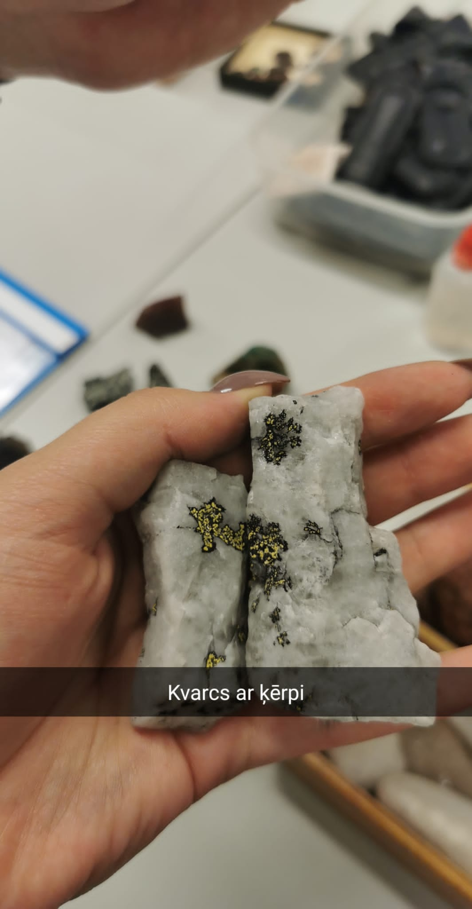
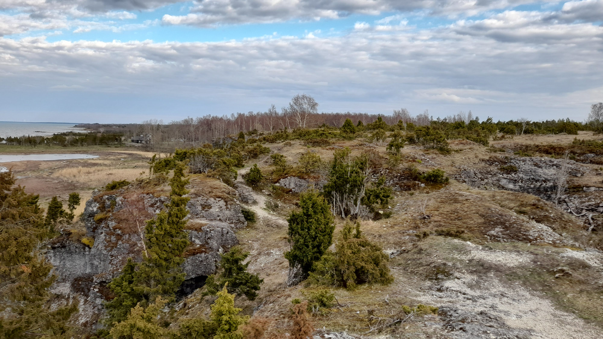
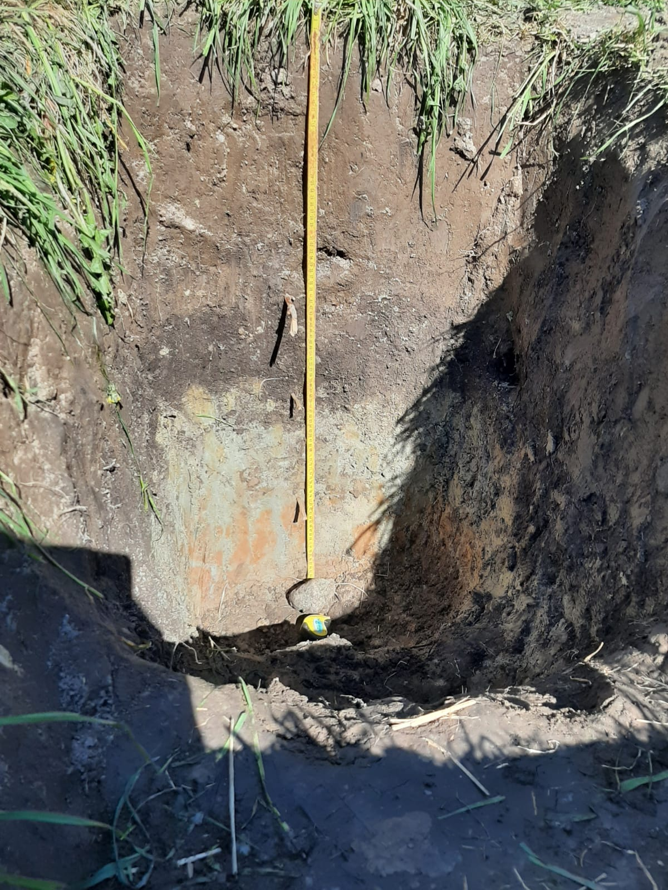

Geogrāfu kursi 1. gadā





Saziņai
📧 jekabs.vanags2001@gmail.com
📞 29226470
Mājaslapa izstrādāta studiju kursa "Tīmekļa dizaina pamati" ietvaros. Visi izmantotie teksti un attēli ir no studenta personīgajiem arhīviem. Darba izstrādātājs: Jēkabs Vanags. Tekstu par ģeogrāfiem autori: Kārlis Plostnieks, Una Ozola.